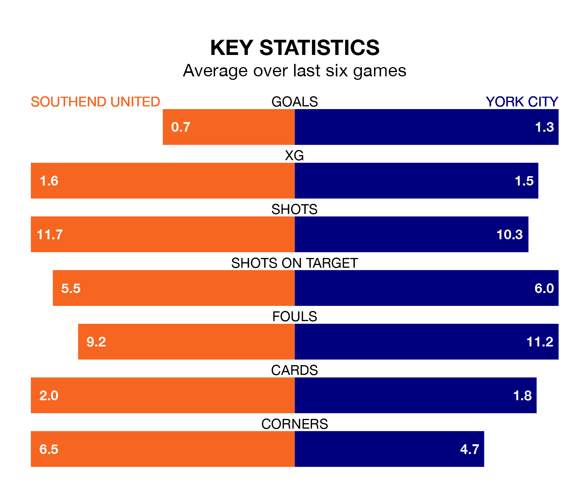

Southend United are heavy favourites to keep all three points at home in Saturday's kick-off against York City.
The Shrimpers, who sit ninth in the National League with 29 games played, are priced at 1.6 to seal victory at Roots Hall.
Sitting nine places and 10 points behind them in the table, York are 5.0 to win with *Betting Company*, while the draw is at 4.0.
With 40 goals in 30 games so far this season, York are scoring at below the league average rate with 1.3 goals per game. And they are conceding more than average, letting in 48 goals at a rate of 1.6 per game.
Southend, meanwhile, are average scorers, with 1.5 goals per game. They have conceded 1.1 goals per game.
United are in disappointing form in the National League, with two wins and four losses from their last six games.
With two wins and three draws over that period, City's form is better – they have taken nine points from 18, compared to the Shrimpers' six.
In the last five years, Southend and York have played each other on four occasions. They won two each.
On average, the Shrimpers scored 1.0 goal and York 1.2 in those matches.
Their last meeting was on September 16, when York won 3-0 at home.
Southend's last match was on February 3, a 1-0 loss against Gateshead.
York drew 1-1 with Maidenhead United last time out, also on February 3, with Sam Beckwith on the scoresheet.
Updated: 11:43 (UTC), 08/02/24